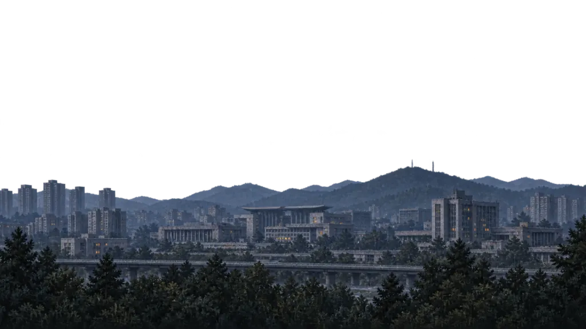
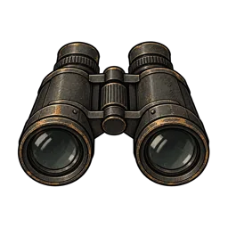
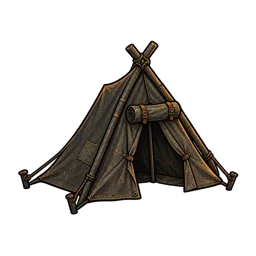
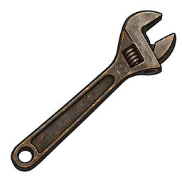

연료 ∞차체 61%안개
 추적 위험
012345/5
추적 위험 설명 열기 또는 닫기
추적 위험
012345/5
추적 위험 설명 열기 또는 닫기
추적 위험
현재 쌓인 관측 표식은 없어요.
달구지의 관측 표식이 남아 있어요. 수치가 높을수록 추적 사건을 만날 가능성이 커져요.
추적 사건을 만날 가능성이 커지고, 길 위에서 검문을 받을 위험도 생겨요.
검문 위험이 높아요. 관측 표식 때문에 마을에서 하룻밤 쉬는 것도 거절당해요.
누적된 위험이에요. 지금 누가 쫓아온다는 뜻은 아니에요. 아래 표시를 다시 누르면 닫혀요.목적지머물기

주변 탐색
야영 준비
차체 정비 ✓부품∞시간+1:40차체+35
차체 정비
이 버튼은 기존 정비 동작의 자리예요. 초안에서는 자원·시간·저장이 바뀌지 않습니다. 다시 누르면 닫혀요.